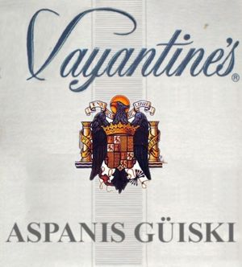

Garrafón
 De: La Frikipedia, la enciclopedia extremadamente seria.
De: La Frikipedia, la enciclopedia extremadamente seria.
No siempre es fácil detectar el garrafón
 Claro ejemplo de
Garaffón Aspañol Posiblemente el problema más grave del siglo xxy1. Con más de 2 muerte y 50 heridos graves por año bisiesto. Y aunque las cifras no parecen especialmente escandalosas (si las comparamos con las hormigas que hay en el mundo), el garrafón incita a los jóvenes de hoy a salir un día si y otro también. Todo para poder cogerse ese pedo especial que buscaban al salir de casa. El garrafón convierte un pedo de risas en un pedo vomitivo. Sin hablar de otros muchos efectos y sus consecuencias. Una de las máximas empresas proveedoras de garrafón es la empresa de telecomunicaciones Garrafone, que usando como tapadare la telefonía móvil, está entrando a saco en bares y pafetos por la trastienda con botellas y botellas de garrafón.
Muchos otros efectos y consecuencias
- La temida resaca: la verdadera culpable del problema de drogadicción que acecha a nuestros canis. La resaca sólo se puede quitar de verdad con una cosa: gelocatil, ibuprofeno y sus genéricos. Y ya lo dice el dicho "¡no te tomes eso!¡que terminarás drogaísto!".
- Terminar en after. Las lagunas ayudan a su vez a terminar en lugares y camas o bancos extraños. Principalmente Toledo porque al estar cuesta abajo, sólo te tienes que dejar caer.
- Enfermedades venéreas y no tan venéreas: las mismas lagunas ya mencionadas, la torpeza que provoca el garrafón y el alcohol, tu torpeza natural, el que existe alguien que también ha tomado garrafón... Bueno. Creo que no hace falta más explicación.
- Una foto tuya termina circulando por internet: si es verano lo más seguro es que termines bailando/a desnudo/a encima de la pista de baile.
- Quedarse sin casa: vomitar encima de tu madre u o pareja, nunca ayuda a conservar tu hogar.
- Ir a la cárcel: coge la frase anterior y cambia:
- Nunca por siempre
- conservar tu hogar por ir a la cárcel
- y madre u o pareja por guardia civil y juez de guardia
Como detectar y/o evitar (si quieres) el garrafón
- Si el camarero saca, en vez de un botella con la etiqueta de la marca que le has pedido, una garrafa de 5 litros con un etiqueta en la que pone "GARRAFÓN"... mosquéate.
- Si pides Ballantines y sacan una botella de Vayantines, chungo pescao...
- Pregunta al camarero si lo que te está sirviendo es garrafón.
- Si bebes agua del Ebro y sobrevives, es garrafón.
- Busca pub en los que las copas sean baratas. De dos euros para abajo segurísimo que no es garrafón. Es más que evidente que con un precio tan bajo, los dueños no pueden pagar las horas que los camareros tienen que dedicar a rellenar las botellas.
- Si te ocurre alguno de los efectos antes mencionados del garrafón, ya no podrás evitarlo pero por lo menos lo habrás detectado.
- Contrata a una empresa de estudios estadísticos. Ellos te dirán con un 0,01% de fiabilidad si lo que te vas a tomar es garrafón. Problema: los resultados no te los dan hasta un mes después.
Autor(es):
- Doctor grijander
- Aque
- Viento
- Luso Banton
- Mierdashi
- Reports iscariot
- Civeronga
Frikipedia 2005-2016, Licencia
GFDL 1.2 - Extraído por FrikiLeaks